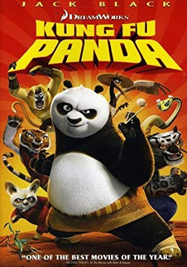

What kind of movies do I like
Here are my top 9 moives I like to watch
|
Click on the movie title to know more about the movie. The text will discribe about 20 minutes into the movies. If you haven't seen the movie and don't want any spoilers than don't click on the movie title. Kung fu pandaKung Fu Panda is a 2008 American computer-animated wuxia action comedy film produced by DreamWorks Animation and distributed by Paramount Pictures. In the Valley of Peace, a land in Ancient China inhabited by anthropomorphic animals, Po the giant panda is a fan of kung fu who idolizes the Furious Five – Tigress, Monkey, Crane, Viper, and Mantis – a quintet of kung fu masters trained by Master Shifu the red panda. However, Po is unable to pursue his dream of learning kung fu while he helps his father, Mr. Ping the goose, in his noodle restaurant. Grand Master Oogway, an old Galápagos tortoise and Shifu's mentor, has a vision that Shifu's former protégé, the evil snow leopard Tai Lung, will escape from prison and return to the valley to exact his revenge for being denied the Dragon Scroll. Panicked, Shifu sends his messenger, with a request for the prison to tighten its security. He then holds a tournament for the Furious Five so that Oogway can identify the Dragon Warrior, the one kung fu master worthy of receiving the Dragon Scroll. Po arrives too late to enter the arena; desperate to see the Dragon Warrior, Po straps himself to a set of fireworks and launches himself into the middle of the arena in front of Oogway as he points towards the Dragon Warrior. To the astonishment of everyone present, Oogway proclaims Po as the chosen warrior. Spider-Man: Into the Spider-Verse
Spider-Man: Into the Spider-Verse is a 2018 American computer-animated superhero film featuring the Marvel Comics character Miles Morales / Spider-Man New York City teenager Miles Morales struggles to live up to the expectations of his father, police officer Jefferson Davis, who sees Spider-Man as a menace. Miles adjusts to boarding school, and visits his uncle Aaron Davis, who takes him to an abandoned subway station to paint graffiti. Miles is bitten by a radioactive spider and gains spider-like abilities similar to Spider-Man. WALL-EWALL-E (stylized with an interpunct as WALL·E) is a 2008 American computer-animated science fiction romance film produced by Pixar Animation Studios for Walt Disney Pictures. In the 29th century, rampant consumerism and environmental neglect have turned Earth into a garbage-strewn wasteland; humanity has been evacuated by the megacorporation Buy-N-Large (BnL) on giant starliners seven centuries earlier. Of all the robotic trash compactors left by BnL to clean up, only one remains operational: a Waste Allocation Load-Lifter: Earth Class named WALL-E. One day, WALL-E's routine of compressing trash and collecting interesting objects is broken by the arrival of an unmanned probe carrying an Extraterrestrial Vegetation Evaluator named EVE, sent to scan the planet for human-sustainable life. WALL-E is smitten by the sleek, otherworldly robot; and the two begin to connect until EVE goes into standby when WALL-E shows her his most recent find: a living seedling. The probe then collects EVE and the plant, and—with WALL-E clinging on—returns to its mothership, the starliner Axiom. Spirited Away
Spirited away is a 2001 Japanese-animated fantasy film written and directed by Hayao Miyazaki, animated by Studio Ghibli. Ten-year-old Chihiro and her parents are traveling to their new home. They make a wrong turn and stop in front of a tunnel leading to what appears to be an abandoned amusement park, which Chihiro's father insists on exploring despite his daughter's misgivings. They find a seemingly empty restaurant still stocked with food, which Chihiro's parents immediately begin to eat. While exploring further, Chihiro finds an exquisite bathhouse and meets a boy named Haku, who warns her to return across the riverbed before sunset. However, Chihiro discovers too late that her parents have metamorphosed into pigs, and she is unable to cross the now-flooded river. Sinister
Sinister is a 2012 supernatural horror film directed and co-written by Scott Derrickson. The film stars Ethan Hawke, Juliet Rylance, James Ransone, Fred Thompson, and Vincent D'Onofrio. The plot revolves around true-crime writer Ellison Oswalt (Hawke) whose discovery in the attic of his new house of a box of home movies depicting grisly murders puts his family in danger. True crime writer Ellison Oswalt moves into a home with his wife Tracy, their 12-year-old son Trevor, and their 7-year-old daughter Ashley. A decade earlier Ellison's book Kentucky Blood was a best-seller but he has struggled to make an impact with subsequent works. Unbeknownst to Ellison's family, he has moved into a home where a family was murdered, all hanged by ropes on a tree in the backyard. Ellison intends to use the case of the murdered family as the basis for his new book and hopes that his research will reveal the fate of the Stevenson family's fifth member, a 10-year-old girl named Stephanie who disappeared following the murders. HushHush is a 2016 American slasher film directed and edited by Mike Flanagan, starring Kate Siegel, who also co-wrote the film with Flanagan. The film co-stars John Gallagher Jr., Michael Trucco, Samantha Sloyan, and Emilia "Emma" Graves. It was jointly produced by Trevor Macy through Intrepid Pictures and Jason Blum through Blumhouse Productions. Maddie Young is a deaf woman who lost her abilities to hear and speak after a bout of bacterial meningitis at age 13, only to lose both permanently after a botched corrective surgery. Hoping to advance her career as an author, she lives an isolated life in the woods with her cat. Her friend Sarah visits her one evening to return a copy of her book. While discussing her writing, Maddie explains how she visualizes her stories, and considers numerous potential endings before deciding on one. Later that night, a masked killer attacks Sarah and chases her to Maddie's house. A bloodied Sarah bangs on the door shouting for help; her cries go unheard because Maddie cannot hear her, and the man stabs Sarah to death. The man quickly realizes Maddie is deaf and decides to make her another victim. EliEli is a 2019 American horror film, directed by Ciarán Foy from a screenplay by David Chirchirillo, Ian Goldberg, and Richard Naing. It stars Kelly Reilly, Sadie Sink, Lili Taylor, Max Martini, and Charlie Shotwell. Eli Miller is a young boy suffering from a rare disease that causes severe allergic reactions to the outdoors, forcing him to live his life in protective gear. His parents, Rose and Paul, have taken him to Dr. Isabella Horn's secluded medical facility, a large, old house that has been modernized and quarantined. Eli is initially overjoyed that the facility allows him to remove his "bubble suit", embrace his parents, and enjoy comforts previously denied to him. His joy is short-lived, however, as he begins to experience supernatural phenomena in the house. He also begins his treatments, which are excruciatingly painful. The spectres repeatedly leave him the message lie, and Eli begins to wonder if they are trying to warn him about Horn's treatments. IT
It, retroactively known as It Chapter One, is a 2017 supernatural horror film based on Stephen King's 1986 novel of the same name. Produced by New Line Cinema, KatzSmith Productions, Lin Pictures, Vertigo Entertainment, and distributed by Warner Bros. In October 1988, Bill Denbrough crafts a paper sailboat for Georgie, his six-year-old brother. Georgie sails the boat along the rainy streets of small town Derry, Maine, only to have it fall down a storm drain. As he attempts to retrieve it, Georgie sees a clown in the drain, who introduces himself as "Pennywise the Dancing Clown". Pennywise entices Georgie to come closer, then bites his arm off and drags him into the sewer. The following summer, Bill and his friends Richie Tozier, Eddie Kaspbrak, and Stan Uris run afoul of older bully Henry Bowers and his gang. Bill, still haunted by Georgie's disappearance, calculates that his brother's body may have washed up in a marshy wasteland called the Barrens. He recruits his friends to investigate, believing Georgie may still be alive. Ben Hanscom, one of Bill's new classmates, learns that the town has been plagued by unexplained tragedies and child disappearances for centuries. Targeted by Bowers' gang, Ben flees into the Barrens and meets Bill's group. They find the sneaker of a missing girl named Betty Ripsom. Beverly Marsh, a girl bullied over rumors of promiscuity, also joins the group. The Cabin in the WoodsThe Cabin in the Woods is a 2011 American horror comedy film directed by Drew Goddard in his directorial debut, produced by Joss Whedon, and written by Whedon and Goddard. The film stars Kristen Connolly, Chris Hemsworth, Anna Hutchison, Fran Kranz, Jesse Williams, Richard Jenkins, and Bradley Whitford. The plot follows a group of college students who retreat to a remote forest cabin where they fall victim to backwoods zombies while technicians manipulate events from an underground facility. In an underground laboratory, engineers Sitterson and Hadley discuss plans for a mysterious ritual, after a similar operation in Stockholm has just ended in failure. American college students Dana, Jules, Curt, Holden, and Marty are spending their weekend at a deserted cabin in the forest. From the lab, Sitterson and Hadley remotely control the cabin and manipulate the students by intoxicating them with mind-altering drugs that have effects such as hindering rational thinking and increasing libido. The lab departments take bets on what kind of monster will attack the students and discuss the failures of international operations. In the cabin's cellar, the group finds bizarre objects, including the diary of Patience Buckner, a cabin resident abused by her sadistic family. Dana recites incantations from the diary and inadvertently summons the zombified Buckner family. |